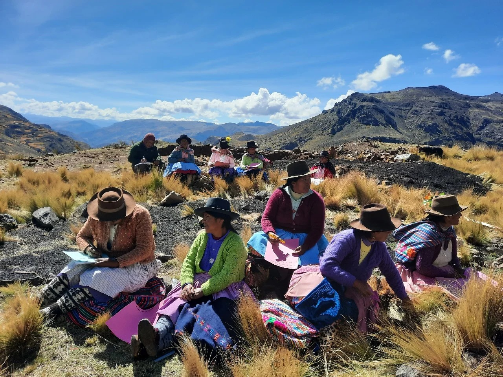
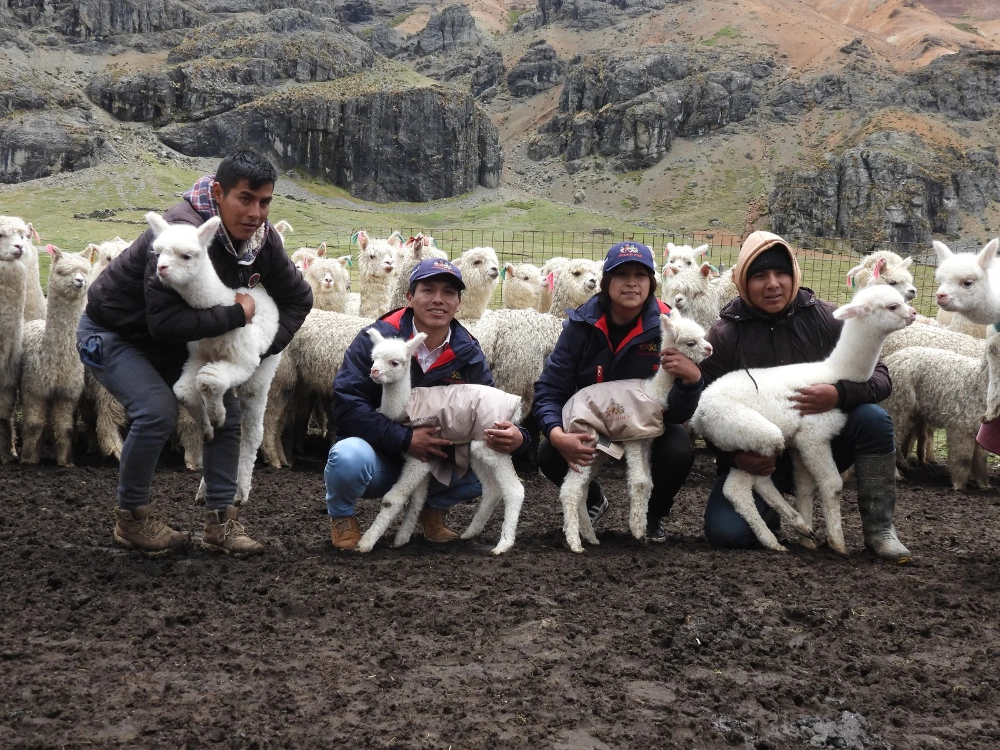

Vecinos Perú
Contribuimos al desarrollo rural del país mediante programas y proyectos que conlleven al desarrollo sustentable y sostenible de poblaciones menos favorecidas y vulnerables.
Conócenos
Contribuimos al desarrollo rural del país mediante programas y proyectos que conlleven al desarrollo sustentable y sostenible de poblaciones menos favorecidas y vulnerables.
ConócenosVECINOS PERÚ es una asociación civil sin fines de lucro, fundada en 1985, dedicada al desarrollo rural sostenible en la región andina. Inscrita en los Registros Públicos de Lima y Ayacucho, y en la Agencia Peruana de Cooperación Internacional (APCI), opera bajo las leyes peruanas sin afiliación política o religiosa.


Cultivos alimenticios, frutales, agroforestería, reforestación, producción de forrajes, conservación de suelos, riego tecnificado, transformación primaria y agro industria.
Desarrollo ganadero de ovinos, vacunos, porcinos y camélidos sudamericanos; agroindustria de productos cárnicos, lácteos, lana, fibra y piel; producción de animales menores, producción de truchas en jaulas flotantes y apicultura.
Organización, constitución y gestión empresarial, contabilidad, planes de negocio, estudios de mercados, cadenas productivas, plataforma de servicios para la producción y comercialización de productos agropecuarios.
Organización y fortalecimiento de capacidades de Comités de Gestión de Microcuencas y Cuencas, manejo y conservación de la biodiversidad, aplicación de instrumentos de gestión ambiental, prevención al cambio climático.
Construcción participativa de estrategias de optimización del uso del territorio y de aprovechamiento de los recursos naturales, en función de las prioridades de desarrollo de los habitantes.
Elaboración de instrumentos técnicos normativos y de gestión que se construyen de manera participativa y vislumbran el desarrollo urbano de ciudades y poblados de manera sostenible, ordenada y segura.
Planificación concertada y participativa integral de reducción de las condiciones de riesgo antes de los desastres, medidas de prevención y mitigación, rehabilitación y reconstrucción.
Promoción, prevención y atención en salud sexual y reproductiva, atención oportuna del embarazo, parto y puerperio, así como atención primaria de la salud y nutrición infantil.
Derechos humanos, afirmación de la identidad local, habilidades sociales, liderazgo, resolución de conflictos, ciudadanía, equidad de género y fortalecimiento de las organizaciones sociales de base.
Fortalecimiento de capacidades locales, espacios de concertación y gestión de gobiernos locales, e incidencia en políticas públicas para el desarrollo.
A nivel de plantas artesanales y semi industriales de transformación de productos altoandinos, agrícolas, forestales y ganaderos.
Formulación de proyectos, elaboración de expedientes técnicos y estudios definitivos para Gobiernos Locales y Regionales, y asesorías a empresas privadas.

Angaraes, Huancavelica, Perú
Comunidad Campesina de Tinyacclla – Huando – Huancavelica.
Comunidades altoandinas de Huancavelica - Perú.
Angaraes, Huancavelica, Perú
Comunidad Campesina de Tinyacclla – Huando – Huancavelica.
Vecinos Perú ha participado en más de 70 proyectos y programas, y cada año emprende nuevos proyectos para impulsar el desarrollo de la comunidad.
Ver proyectos